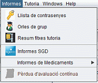
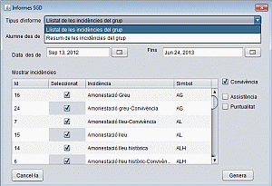
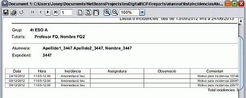

Si anau al menu de la pantalla principal, cercau l'ítem
Informes. Se vos desplegarà la següent llista.

Llistes de contrasenyes
Si feis clic al menú llista de contrasenyes, se vos
obrirà un informe amb el nom d'usuari i contrasenya que han de
fer servir els pares per accedir al sistema SGD-WEB des de casa seva.
Atenció: l'informe només mostrarà alumnes que no
pertanyen a la vostra tutoria.
Orles del grup
Podeu treure les orles de fotos dels alumnes que tengueu seleccionats a
la pantalla principal. Aneu amb compte ja que si teniu seleccionats
tots els alumnes del centre, creareu totes les orles de l'institut.
Nota: Qualsevol professor pot treure les orles del grup que desitgi.
Informes SGD
Per comoditat pel tutor, el programa permet treure dos informes del
programa SGD: el llistat d'incidències del grup i el resum
d'incidències. El funcionament és semblant al del
programa SGD. Triau el tipus d'informe. El rang d'alumnes i dates i el
rang d'incidències. Pitjau el botó genera.
Atenció: Només podreu obtenir informació dels
alumnes que tingueu assignats a la tutoria.

Llistat d’incidències
La imatge de sota mostra un informe de
llistat d'incidències.

Resum d’incidències
La imatge de sota mostra un informe de
resum d'incidències.